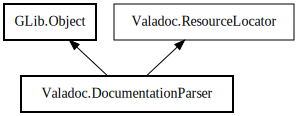

DocumentationParser
Object Hierarchy:

Description:
public class DocumentationParser :
Object,
ResourceLocator
Content:
Creation methods:
Methods:
- public Comment? parse (Node element, SourceComment comment)
- public Comment? parse_comment_str (Node element, string content, string filename, int first_line, int first_column)
- public Page? parse_wikipage (Package pkg, WikiPage page)
- private Comment parse_comment (string content, string filename, int first_line, int first_column) throws ParserError
- private Page parse_wiki (string content, string filename) throws ParserError
- public void check (Node element, Comment comment)
- public void check_wikipage (Package package, WikiPage page)
- public void transform_inheritdoc (Node taglet_owner, InheritDoc taglet)
- private GirMetaData get_metadata_for_comment (GirSourceComment gir_comment)
- public string resolve (string path)
- private void push (Object element)
- private Object peek (int offset = -1)
- private Object pop ()
- private void new_list_item (Bullet bullet) throws ParserError
- private string bullet_type_string (Bullet bullet)
- private void finish_list ()
- private void add_content_string (string str)
- private void add_content_space (Token token) throws ParserError
- private void add_text (Token token) throws ParserError
- private void init_valadoc_rules ()
Fields:
Inherited Members:
All known members inherited from class GLib.Object
- @new
- new_valist
- newv
- new_with_properties
- add_toggle_ref
- add_weak_pointer
- bind_property
- connect
- constructed
- disconnect
- dispose
- dup_data
- dup_qdata
- freeze_notify
- @get
- get_class
- get_data
- get_property
- get_qdata
- get_type
- getv
- notify_property
- @ref
- ref_sink
- replace_data
- replace_qdata
- remove_toggle_ref
- remove_weak_pointer
- @set
- set_data
- set_data_full
- set_property
- set_qdata
- set_qdata_full
- setv
- steal_data
- steal_qdata
- thaw_notify
- unref
- watch_closure
- weak_ref
- weak_unref
- notify
- ref_count
All known members inherited from interface Valadoc.ResourceLocator